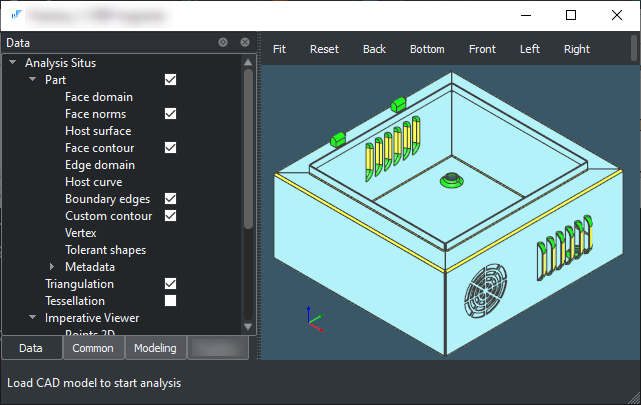
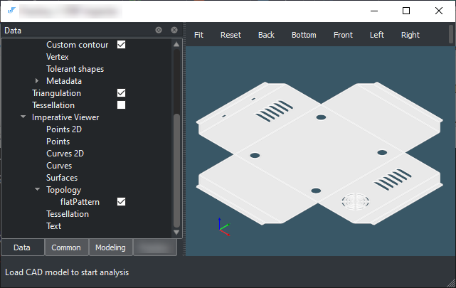
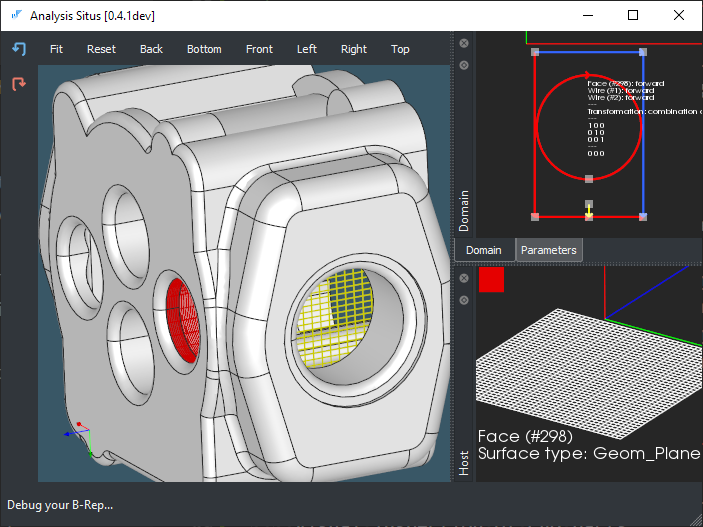
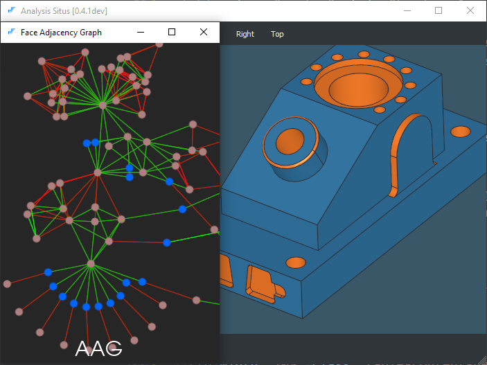
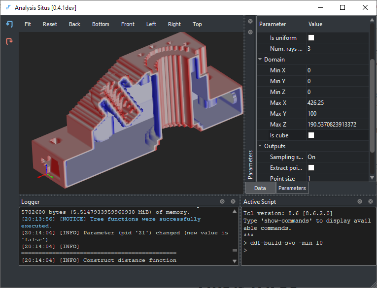

|
Analysis Situs has been used by many independent researchers and organizations. We continue collecting the feedback, which people sporadically share with us. Without mentioning the names and going into deep details, here we list the application areas where Analysis Situs appeared to be useful:
Below is the list of algorithms that constitute the added value of Analysis Situs. Most of the contributions we keep open-sourced, while some others cannot be disclosed. We list all the algorithms that have ever been developed with the help of Analysis Situs. The complete list of lower-level features can be found in the dedicated page.
| Sheet metal recognition and unfolding |
|
This algorithm aims at recognizing sheet metal CAD parts and unfolding them to generate precise drawings for manufacturing. 
Recognized sheet metal part.

Flat pattern after unfolding.
|
| Visual inspection of CAD parts |
|
Analysis Situs lets you analyze the geometric and topological inconsistencies in your model. 
Visual inspection of a CAD part.
|
| Feature recognition |
|
Analysis Situs provides a framework for graph-based feature recognition. 
Attributed Adjacency Graph for a CAD part.
|
| CAD voxelization |
|
Analysis Situs allows for converting CAD models to voxel representation. 
Octree-based voxelization of a CAD part.
|